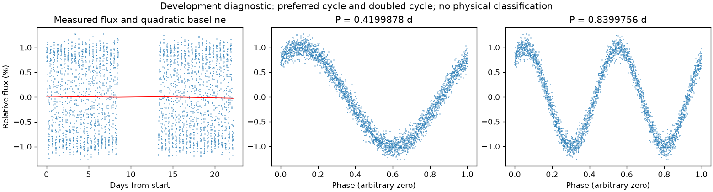
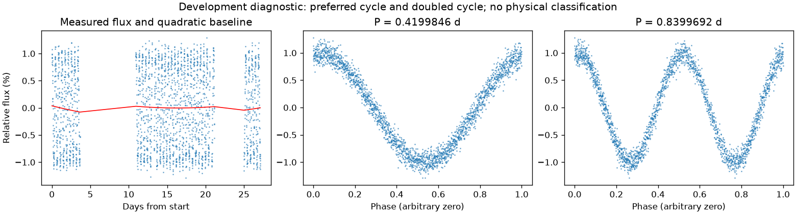

存在来源疑点，保留人工复核
亮度重复周期约 0.41998619 天。多组周期候选尚未排清，未选择最终周期；这不证明存在多种独立物理变化。
第二版周期：0.41998777923951564 天；状态：preferred_lightcurve_cycle。

左图红线是缓慢基线；右面两图去除该基线。若未通过周期要求，两图只展示得分最高的竞争解释。
| 竞争周期（天） | 交替周期预测改善 | 两组各自改善 | 通过初筛 |
|---|---|---|---|
| 0.8400321 | 97.5% | 97.5% / 97.5% | 是 |
| 0.4199878 | 97.4% | 97.4% / 97.4% | 是 |
| 0.2049459 | 45.2% | 47.1% / 43.4% | 是 |
| 0.4098918 | 30.7% | 29.6% / 31.7% | 是 |
| 0.4307275 | 30.5% | 31.9% / 29.1% | 是 |
| 0.8183850 | 24.6% | 22.5% / 26.9% | 是 |
| 0.8630944 | 24.0% | 26.9% / 21.3% | 是 |
| 0.2150333 | -65.7% | -65.5% / -65.9% | 否 |
“预测改善”衡量用一组周期的形状预测另一组，比只有缓慢基线好多少；负数表示更差。搜索和预测共用了资料，因此这不是可信概率，也不是独立验证。
辅助数据检查：背景 SAP_BKG、指向修正 POS_CORR、亮斑中心 MOM_CENTR，或明确提供的仪器通道。
相关性只提示需要检查来源。恒星自身变暗也可能导致亮斑中心移动，不能据此断定是仪器。
第二版周期：0.4199846063176986 天；状态：preferred_lightcurve_cycle。

左图红线是缓慢基线；右面两图去除该基线。若未通过周期要求，两图只展示得分最高的竞争解释。
| 竞争周期（天） | 交替周期预测改善 | 两组各自改善 | 通过初筛 |
|---|---|---|---|
| 0.4199846 | 97.3% | 97.3% / 97.3% | 是 |
| 0.8399461 | 97.3% | 97.2% / 97.4% | 是 |
| 0.4095700 | 23.5% | 25.8% / 21.2% | 是 |
| 0.8140281 | 17.6% | 19.2% / 16.0% | 否 |
| 0.8670344 | 16.8% | 17.2% / 16.3% | 否 |
| 0.4337143 | 15.0% | 13.7% / 16.4% | 否 |
| 0.2030737 | -35.1% | -35.3% / -34.8% | 否 |
| 0.2170762 | -44.8% | -45.1% / -44.5% | 否 |
“预测改善”衡量用一组周期的形状预测另一组，比只有缓慢基线好多少；负数表示更差。搜索和预测共用了资料，因此这不是可信概率，也不是独立验证。
辅助数据检查：背景 SAP_BKG、指向修正 POS_CORR、亮斑中心 MOM_CENTR，或明确提供的仪器通道。
相关性只提示需要检查来源。恒星自身变暗也可能导致亮斑中心移动，不能据此断定是仪器。